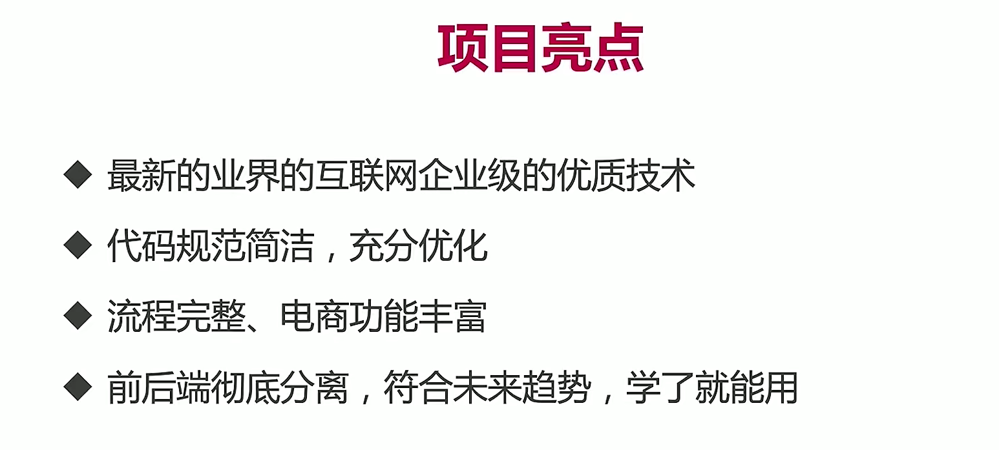

阶段4: 从SSM到SpringBoot项目实战
第27-28周 Spring Boot电商项目实战
第2节 Spring Boot电商项目
1-1 电商项目整体介绍
1-2 为什么要做电商系统？
1-3 项目亮点

1-4 模块和功能介绍


1-5 项目演示-前台
3-1 数据库表设计
/*!40101 SET @OLD_CHARACTER_SET_CLIENT=@@CHARACTER_SET_CLIENT */;
/*!40101 SET @OLD_CHARACTER_SET_RESULTS=@@CHARACTER_SET_RESULTS */;
/*!40101 SET @OLD_COLLATION_CONNECTION=@@COLLATION_CONNECTION */;
/*!40101 SET NAMES utf8 */;
SET NAMES utf8mb4;
/*!40014 SET @OLD_FOREIGN_KEY_CHECKS=@@FOREIGN_KEY_CHECKS, FOREIGN_KEY_CHECKS=0 */;
/*!40101 SET @OLD_SQL_MODE=@@SQL_MODE, SQL_MODE='NO_AUTO_VALUE_ON_ZERO' */;
/*!40111 SET @OLD_SQL_NOTES=@@SQL_NOTES, SQL_NOTES=0 */;
# Dump of table imooc_mall_cart
# ------------------------------------------------------------
DROP TABLE IF EXISTS `imooc_mall_cart`;
CREATE TABLE `imooc_mall_cart` (
`id` int(11) NOT NULL AUTO_INCREMENT COMMENT '购物车id',
`product_id` int(11) NOT NULL COMMENT '商品id',
`user_id` int(11) NOT NULL COMMENT '用户id',
`quantity` int(11) NOT NULL DEFAULT '1' COMMENT '商品数量',
`selected` int(11) NOT NULL DEFAULT '1' COMMENT '是否已勾选：0代表未勾选，1代表已勾选',
`create_time` timestamp NOT NULL DEFAULT CURRENT_TIMESTAMP COMMENT '创建时间',
`update_time` timestamp NOT NULL DEFAULT CURRENT_TIMESTAMP ON UPDATE CURRENT_TIMESTAMP COMMENT '更新时间',
PRIMARY KEY (`id`)
) ENGINE=InnoDB DEFAULT CHARSET=utf8mb4 COMMENT='购物车';
# Dump of table imooc_mall_category
# ------------------------------------------------------------
DROP TABLE IF EXISTS `imooc_mall_category`;
CREATE TABLE `imooc_mall_category` (
`id` int(11) NOT NULL AUTO_INCREMENT COMMENT '主键',
`name` varchar(32) NOT NULL DEFAULT '' COMMENT '分类目录名称',
`type` int(11) NOT NULL COMMENT '分类目录级别，例如1代表一级，2代表二级，3代表三级',
`parent_id` int(11) NOT NULL COMMENT '父id，也就是上一级目录的id，如果是一级目录，那么父id为0',
`order_num` int(11) NOT NULL COMMENT '目录展示时的排序',
`create_time` timestamp NOT NULL DEFAULT CURRENT_TIMESTAMP COMMENT '创建时间',
`update_time` timestamp NOT NULL DEFAULT CURRENT_TIMESTAMP ON UPDATE CURRENT_TIMESTAMP COMMENT '更新时间',
PRIMARY KEY (`id`)
) ENGINE=InnoDB DEFAULT CHARSET=utf8mb4 COMMENT='商品分类 ';
LOCK TABLES `imooc_mall_category` WRITE;
/*!40000 ALTER TABLE `imooc_mall_category` DISABLE KEYS */;
INSERT INTO `imooc_mall_category` (`id`, `name`, `type`, `parent_id`, `order_num`, `create_time`, `update_time`)
VALUES
(3,'新鲜水果',1,0,1,'2019-12-18 01:17:00','2019-12-28 17:11:26'),
(4,'橘子橙子',2,3,1,'2019-12-18 01:17:00','2019-12-28 16:25:10'),
(5,'海鲜水产',1,0,2,'2019-12-18 01:17:00','2019-12-28 16:25:20'),
(6,'精选肉类',1,0,3,'2019-12-18 01:17:00','2019-12-28 16:25:21'),
(7,'螃蟹',2,5,1,'2019-12-18 01:17:00','2019-12-28 16:25:15'),
(8,'鱼类',2,5,2,'2019-12-18 01:17:00','2019-12-28 16:25:16'),
(9,'冷饮冻食',1,0,4,'2019-12-20 13:45:28','2019-12-28 16:25:22'),
(10,'蔬菜蛋品',1,0,5,'2019-12-20 13:45:28','2019-12-28 16:25:23'),
(11,'草莓',2,3,2,'2019-12-18 01:17:00','2019-12-28 15:44:42'),
(12,'奇异果',2,3,3,'2019-12-18 01:17:00','2019-12-28 16:25:12'),
(13,'海参',2,5,3,'2019-12-18 01:17:00','2019-12-28 16:25:17'),
(14,'车厘子',2,3,4,'2019-12-18 01:17:00','2019-12-28 16:25:12'),
(15,'火锅食材',2,27,5,'2019-12-18 01:17:00','2020-02-11 00:42:33'),
(16,'牛羊肉',2,6,1,'2019-12-18 01:17:00','2019-12-28 16:25:18'),
(17,'冰淇淋',2,9,1,'2019-12-18 01:17:00','2019-12-28 16:25:18'),
(18,'蔬菜综合',2,10,1,'2019-12-18 01:17:00','2020-02-11 00:48:27'),
(19,'果冻橙',3,4,1,'2019-12-18 01:17:00','2020-02-11 00:37:02'),
(27,'美味菌菇',1,0,7,'2019-12-20 13:45:28','2020-02-10 23:20:36'),
(28,'其他水果',2,3,4,'2019-12-18 01:17:00','2019-12-28 16:25:12'),
(30,'鸭货',3,6,10,'2020-03-03 22:45:53','2020-03-03 22:45:53');
/*!40000 ALTER TABLE `imooc_mall_category` ENABLE KEYS */;
UNLOCK TABLES;
# Dump of table imooc_mall_order
# ------------------------------------------------------------
DROP TABLE IF EXISTS `imooc_mall_order`;
CREATE TABLE `imooc_mall_order` (
`id` int(64) NOT NULL AUTO_INCREMENT COMMENT '主键id',
`order_no` varchar(128) NOT NULL DEFAULT '' COMMENT '订单号（非主键id）',
`user_id` int(64) NOT NULL COMMENT '用户id',
`total_price` int(64) NOT NULL COMMENT '订单总价格',
`receiver_name` varchar(32) NOT NULL COMMENT '收货人姓名快照',
`receiver_mobile` varchar(32) NOT NULL COMMENT '收货人手机号快照',
`receiver_address` varchar(128) NOT NULL DEFAULT '' COMMENT '收货地址快照',
`order_status` int(10) NOT NULL DEFAULT '10' COMMENT '订单状态: 0用户已取消，10未付款（初始状态），20已付款，30已发货，40交易完成',
`postage` int(10) DEFAULT '0' COMMENT '运费，默认为0',
`payment_type` int(4) NOT NULL DEFAULT '1' COMMENT '支付类型,1-在线支付',
`delivery_time` timestamp NULL DEFAULT NULL COMMENT '发货时间',
`pay_time` timestamp NULL DEFAULT NULL COMMENT '支付时间',
`end_time` timestamp NULL DEFAULT NULL COMMENT '交易完成时间',
`create_time` timestamp NOT NULL DEFAULT CURRENT_TIMESTAMP COMMENT '创建时间',
`update_time` timestamp NOT NULL DEFAULT CURRENT_TIMESTAMP ON UPDATE CURRENT_TIMESTAMP COMMENT '更新时间',
PRIMARY KEY (`id`)
) ENGINE=InnoDB DEFAULT CHARSET=utf8mb4 COMMENT='订单表;';
# Dump of table imooc_mall_order_item
# ------------------------------------------------------------
DROP TABLE IF EXISTS `imooc_mall_order_item`;
CREATE TABLE `imooc_mall_order_item` (
`id` int(64) NOT NULL AUTO_INCREMENT COMMENT '主键id',
`order_no` varchar(128) NOT NULL DEFAULT '' COMMENT '归属订单id',
`product_id` int(11) NOT NULL COMMENT '商品id',
`product_name` varchar(100) NOT NULL DEFAULT '' COMMENT '商品名称',
`product_img` varchar(128) NOT NULL DEFAULT '' COMMENT '商品图片',
`unit_price` int(11) NOT NULL COMMENT '单价（下单时的快照）',
`quantity` int(10) NOT NULL DEFAULT '1' COMMENT '商品数量',
`total_price` int(11) NOT NULL DEFAULT '0' COMMENT '商品总价',
`create_time` timestamp NOT NULL DEFAULT CURRENT_TIMESTAMP COMMENT '创建时间',
`update_time` timestamp NOT NULL DEFAULT CURRENT_TIMESTAMP ON UPDATE CURRENT_TIMESTAMP COMMENT '更新时间',
PRIMARY KEY (`id`)
) ENGINE=InnoDB DEFAULT CHARSET=utf8mb4 COMMENT='订单的商品表 ';
# Dump of table imooc_mall_product
# ------------------------------------------------------------
DROP TABLE IF EXISTS `imooc_mall_product`;
CREATE TABLE `imooc_mall_product` (
`id` int(64) NOT NULL AUTO_INCREMENT COMMENT '商品主键id',
`name` varchar(100) NOT NULL COMMENT '商品名称',
`image` varchar(500) NOT NULL DEFAULT '' COMMENT '产品图片,相对路径地址',
`detail` varchar(500) DEFAULT '' COMMENT '商品详情',
`category_id` int(11) NOT NULL COMMENT '分类id',
`price` int(11) NOT NULL COMMENT '价格,单位-分',
`stock` int(11) NOT NULL COMMENT '库存数量',
`status` int(6) NOT NULL DEFAULT '1' COMMENT '商品上架状态：0-下架，1-上架',
`create_time` timestamp NOT NULL DEFAULT CURRENT_TIMESTAMP COMMENT '创建时间',
`update_time` timestamp NOT NULL DEFAULT CURRENT_TIMESTAMP ON UPDATE CURRENT_TIMESTAMP COMMENT '更新时间',
PRIMARY KEY (`id`)
) ENGINE=InnoDB DEFAULT CHARSET=utf8mb4 COMMENT='商品表';
LOCK TABLES `imooc_mall_product` WRITE;
/*!40000 ALTER TABLE `imooc_mall_product` DISABLE KEYS */;
INSERT INTO `imooc_mall_product` (`id`, `name`, `image`, `detail`, `category_id`, `price`, `stock`, `status`, `create_time`, `update_time`)
VALUES
(2,'澳洲进口大黑车厘子大樱桃包甜黑樱桃大果多汁 500g 特大果','http://127.0.0.1:8083/images/chelizi2.jpg','商品毛重：1.0kg货号：608323093445原产地：智利类别：美早热卖时间：1月，11月，12月国产/进口：进口售卖方式：单品',14,50,1001,1,'2019-12-18 16:08:15','2020-03-07 18:44:26'),
(3,'茶树菇 美味菌菇 东北山珍 500g','http://127.0.0.1:8083/images/chashugu.jpg','商品名：茶树菇 商品特点：美味菌菇 东北山珍 500g',15,1000,6,1,'2019-12-18 16:10:50','2020-03-07 18:44:26'),
(14,'Zespri佳沛 新西兰阳光金奇异果 6个装','http://127.0.0.1:8083/images/mihoutao2.jpg','商品编号：4635056商品毛重：0.71kg商品产地：新西兰类别：金果包装：简装国产/进口：进口原产地：新西兰',12,39,77,1,'2019-12-18 16:11:13','2020-03-07 18:40:51'),
(17,'红颜奶油草莓 约重500g/20-24颗 新鲜水果','http://127.0.0.1:8083/images/caomei2.jpg','商品毛重：0.58kg商品产地：丹东/南通/武汉类别：红颜草莓包装：简装国产/进口：国产',11,99,84,1,'2019-12-18 16:11:13','2020-03-07 18:40:55'),
(21,'智利原味三文鱼排（大西洋鲑）240g/袋 4片装','http://127.0.0.1:8083/images/sanwenyu2.jpg','商品毛重：260.00g商品产地：中国大陆保存状态：冷冻国产/进口：进口包装：简装类别：三文鱼海水/淡水：海水烹饪建议：煎炸，蒸菜，烧烤原产地：智利',8,499,0,1,'2019-12-28 15:13:07','2020-03-07 18:41:01'),
(22,'即食海参大连野生辽刺参 新鲜速食 特级生鲜海产 60~80G','http://127.0.0.1:8083/images/haishen.jpg','商品毛重：1.5kg商品产地：中国大陆贮存条件：冷冻重量：50-99g国产/进口：国产适用场景：养生滋补包装：袋装原产地：辽宁年限：9年以上等级：特级食品工艺：冷冻水产热卖时间：9月类别：即食海参固形物含量：70%-90%特产品类：大连海参售卖方式：单品',13,699,0,1,'2019-12-28 15:16:29','2020-03-07 18:41:06'),
(23,'澳大利亚直采鲜橙 精品澳橙12粒 单果130-180g','http://127.0.0.1:8083/images/chengzi.jpg','商品毛重：2.27kg商品产地：澳大利亚类别：脐橙包装：简装国产/进口：进口原产地：澳大利亚',4,12,12,1,'2019-12-28 16:02:13','2020-03-07 18:41:13'),
(24,'智利帝王蟹礼盒装4.4-4.0斤/只 生鲜活鲜熟冻大螃蟹','http://127.0.0.1:8083/images/diwangxie.jpg','商品毛重：3.0kg商品产地：智利大闸蟹售卖方式：公蟹重量：2000-4999g套餐份量：5人份以上国产/进口：进口海水/淡水：海水烹饪建议：火锅，炒菜，烧烤，刺身，加热即食包装：简装原产地：智利保存状态：冷冻公单蟹重：5.5两及以上分类：帝王蟹特产品类：其它售卖方式：单品',7,222,222,1,'2019-12-28 16:06:34','2020-03-07 18:41:31'),
(25,'新疆库尔勒克伦生无籽红提 国产新鲜红提葡萄 提子 5斤装','http://127.0.0.1:8083/images/hongti.jpg','商品毛重：2.5kg商品产地：中国大陆货号：XZL201909002重量：2000-3999g套餐份量：2人份国产/进口：国产是否有机：非有机单箱规格：3个装，4个装，5个装类别：红提包装：简装原产地：中国大陆售卖方式：单品',28,222,222,1,'2019-12-28 16:06:34','2020-03-07 18:41:25'),
(26,'越南进口红心火龙果 4个装 红肉中果 单果约330-420g','http://127.0.0.1:8083/images/hongxinhuolongguo.jpg','商品毛重：1.79kg商品产地：越南重量：1000-1999g类别：红心火龙果包装：简装国产/进口：进口',28,222,222,1,'2019-12-28 16:06:34','2020-03-07 18:41:38'),
(27,'内蒙古羔羊肉串 500g/袋（约20串）鲜冻羊肉串 BBQ烧烤食材','http://127.0.0.1:8083/images/yangrouchuan.jpg','商品毛重：0.585kg商品产地：内蒙古巴彦淖尔市保存状态：冷冻重量：500-999g套餐份量：3人份国产/进口：国产烹饪建议：烧烤原产地：内蒙古品种：其它热卖时间：4月，5月，6月，7月，8月，9月，10月，11月，12月饲养方式：圈养类别：羊肉串包装：简装套餐周期：12个月',16,222,211,1,'2019-12-28 16:06:34','2020-03-07 18:41:44'),
(28,'玛琪摩尔新西兰进口冰淇淋大桶装','http://127.0.0.1:8083/images/bingqilin.jpg','商品毛重：1.04kg商品产地：新西兰国产/进口：进口包装：量贩装',17,222,222,1,'2019-12-28 16:06:34','2020-03-07 18:41:49'),
(29,'西兰花沙拉菜 350g 甜玉米粒 青豆豌豆 胡萝卜冷冻方便蔬菜','http://127.0.0.1:8083/images/shalacai.jpg','商品毛重：370.00g商品产地：浙江宁波重量：500g以下套餐份量：家庭装类别：速冻玉米/豌豆包装：简装烹饪建议：炒菜，炖菜，煎炸，蒸菜售卖方式：单品',18,222,220,1,'2019-12-28 16:06:34','2020-03-07 18:41:53'),
(36,'四川果冻橙 吹弹可破','http://127.0.0.1:8083/images/guodongcheng.jpg','商品毛重：370.00g商品产地：四川 重量：1000g',19,222,222,1,'2019-12-28 16:06:34','2020-03-07 18:41:57'),
(37,'进口牛油果 中果6粒装 单果约130-160g ','http://127.0.0.1:8083/images/niuyouguo.jpg','商品名称：京觅进口牛油果 6个装商品编号：3628240商品毛重：1.2kg商品产地：秘鲁、智利、墨西哥重量：1000g以下国产/进口：进口',28,222,222,1,'2019-12-28 16:06:34','2020-03-07 18:42:01'),
(38,'中街1946网红雪糕冰淇淋','http://127.0.0.1:8083/images/bingqilin2.jpg','商品名称：中街1946网红雪糕冰淇淋乐享系列半巧*5牛乳*5阿棕*2冰激凌冷饮冰棍冰棒商品编号：52603405444店铺： 中街1946官方旗舰店商品毛重：1.3kg商品产地：中国大陆国产/进口：国产包装：量贩装售卖方式：组合',17,222,222,1,'2019-12-28 16:06:34','2020-03-07 18:42:05'),
(39,'福建六鳌红薯5斤','http://127.0.0.1:8083/images/hongshu.jpg','商品名称：京觅福建六鳌红薯5斤商品编号：4087121商品毛重：2.8kg商品产地：福建省漳浦县六鳌镇重量：2500g及以上烹饪建议：煎炸，蒸菜，烧烤包装：简装分类：地瓜/红薯售卖方式：单品',18,40,221,1,'2019-12-28 16:06:34','2020-03-07 18:42:11'),
(40,'胡萝卜','http://127.0.0.1:8083/images/huluobo.jpg','商品名称：绿鲜知胡萝卜商品编号：4116192商品毛重：1.07kg商品产地：北京包装：简装分类：萝卜烹饪建议：火锅，炒菜，炖菜',18,222,221,1,'2019-12-28 16:06:34','2020-03-07 18:42:15'),
(41,'羊肉卷 内蒙羔羊肉 鲜嫩 500g/袋 首农出品 羊排肉卷 火锅食材','http://127.0.0.1:8083/images/yangroujuan.jpg','商品名称：首食惠羊排片商品编号：4836347商品毛重：0.51kg商品产地：辽宁省大连市保存状态：冷冻品种：其它国产/进口：进口饲养方式：散养类别：羊肉片/卷包装：简装烹饪建议：火锅，炒菜，炖菜原产地：新西兰',16,222,222,1,'2019-12-28 16:06:34','2020-03-07 18:42:19'),
(42,'甜玉米 切好 香甜','http://127.0.0.1:8083/images/tianyumi.jpg','品牌： 绿鲜知（greenseer）\n商品名称：绿鲜知甜玉米商品编号：4983604商品毛重：1.1kg商品产地：云南玉溪类别：玉米',18,240,221,1,'2019-12-28 16:06:34','2020-03-07 18:42:24');
/*!40000 ALTER TABLE `imooc_mall_product` ENABLE KEYS */;
UNLOCK TABLES;
# Dump of table imooc_mall_user
# ------------------------------------------------------------
DROP TABLE IF EXISTS `imooc_mall_user`;
CREATE TABLE `imooc_mall_user` (
`id` int(64) NOT NULL AUTO_INCREMENT COMMENT '用户id',
`username` varchar(32) NOT NULL DEFAULT '' COMMENT '用户名',
`password` varchar(50) NOT NULL COMMENT '用户密码，MD5加密',
`personalized_signature` varchar(50) NOT NULL DEFAULT '' COMMENT '个性签名',
`role` int(4) NOT NULL DEFAULT '1' COMMENT '角色，1-普通用户，2-管理员',
`create_time` timestamp NOT NULL DEFAULT CURRENT_TIMESTAMP COMMENT '创建时间',
`update_time` timestamp NOT NULL DEFAULT CURRENT_TIMESTAMP ON UPDATE CURRENT_TIMESTAMP COMMENT '更新时间',
PRIMARY KEY (`id`)
) ENGINE=InnoDB DEFAULT CHARSET=utf8mb4 COMMENT='用户表 ';
LOCK TABLES `imooc_mall_user` WRITE;
/*!40000 ALTER TABLE `imooc_mall_user` DISABLE KEYS */;
INSERT INTO `imooc_mall_user` (`id`, `username`, `password`, `personalized_signature`, `role`, `create_time`, `update_time`)
VALUES
(1,'1','1','666',1,'2019-12-16 02:37:33','2020-02-29 14:33:23'),
(2,'xiaomu','AWRuqaxc6iryhHuA4OnFag==','更新了我的签名',2,'2019-12-17 15:11:32','2020-02-10 09:52:12'),
(9,'xiaomu2','AWRuqaxc6iryhHuA4OnFag==','祝你今天好心情',2,'2020-02-09 20:39:47','2020-02-11 00:56:02'),
(10,'mumu','12345678','',1,'2020-02-29 16:53:22','2020-02-29 16:53:22'),
(11,'mumu3','124567474','',1,'2020-02-29 16:56:07','2020-02-29 16:56:07'),
(12,'mumu4','SMRMN9k6YmXAjbsJCMdxrQ==','天气晴朗',1,'2020-02-29 17:25:55','2020-02-29 21:59:02'),
(13,'mumu5','SMRMN9k6YmXAjbsJCMdxrQ==','奋勇向前',2,'2020-02-29 22:09:56','2020-02-29 22:12:11'),
(14,'imooc','SMRMN9k6YmXAjbsJCMdxrQ==','',1,'2020-03-02 22:45:48','2020-03-02 22:45:48'),
(15,'super2','SMRMN9k6YmXAjbsJCMdxrQ==','',1,'2020-03-07 18:09:47','2020-03-07 18:09:47');
/*!40000 ALTER TABLE `imooc_mall_user` ENABLE KEYS */;
UNLOCK TABLES;
/*!40111 SET SQL_NOTES=@OLD_SQL_NOTES */;
/*!40101 SET SQL_MODE=@OLD_SQL_MODE */;
/*!40014 SET FOREIGN_KEY_CHECKS=@OLD_FOREIGN_KEY_CHECKS */;
/*!40101 SET CHARACTER_SET_CLIENT=@OLD_CHARACTER_SET_CLIENT */;
/*!40101 SET CHARACTER_SET_RESULTS=@OLD_CHARACTER_SET_RESULTS */;
/*!40101 SET COLLATION_CONNECTION=@OLD_COLLATION_CONNECTION */;
3-2 如何技术选型？


3-3 项目初始化-生成逆向文件


pom.xml
<?xml version="1.0" encoding="UTF-8"?>
<project xmlns="http://maven.apache.org/POM/4.0.0"
xmlns:xsi="http://www.w3.org/2001/XMLSchema-instance"
xsi:schemaLocation="http://maven.apache.org/POM/4.0.0 http://maven.apache.org/xsd/maven-4.0.0.xsd">
<modelVersion>4.0.0</modelVersion>
<parent>
<groupId>org.springframework.boot</groupId>
<artifactId>spring-boot-starter-parent</artifactId>
<version>2.2.1.RELEASE</version>
<relativePath/> <!-- lookup parent from repository -->
</parent>
<groupId>org.imooc</groupId>
<artifactId>imooc_mall</artifactId>
<version>1.0-SNAPSHOT</version>
<properties>
<maven.compiler.source>8</maven.compiler.source>
<maven.compiler.target>8</maven.compiler.target>
<project.build.sourceEncoding>UTF-8</project.build.sourceEncoding>
</properties>
<dependencies>
<dependency>
<groupId>org.springframework.boot</groupId>
<artifactId>spring-boot-starter-web</artifactId>
<exclusions>
<exclusion>
<groupId>org.springframework.boot</groupId>
<artifactId>spring-boot-starter-logging</artifactId>
</exclusion>
</exclusions>
</dependency>
<dependency>
<groupId>org.springframework.boot</groupId>
<artifactId>spring-boot-starter-test</artifactId>
<scope>test</scope>
<exclusions>
<exclusion>
<groupId>org.junit.vintage</groupId>
<artifactId>junit-vintage-engine</artifactId>
</exclusion>
</exclusions>
</dependency>
<dependency>
<groupId>org.mybatis.spring.boot</groupId>
<artifactId>mybatis-spring-boot-starter</artifactId>
<version>1.3.2</version>
</dependency>
<dependency>
<groupId>mysql</groupId>
<artifactId>mysql-connector-java</artifactId>
</dependency>
</dependencies>
<build>
<plugins>
<plugin>
<groupId>org.springframework.boot</groupId>
<artifactId>spring-boot-maven-plugin</artifactId>
<configuration>
<includeSystemScope>true</includeSystemScope>
</configuration>
</plugin>
<plugin>
<groupId>org.mybatis.generator</groupId>
<artifactId>mybatis-generator-maven-plugin</artifactId>
<version>1.3.7</version>
<configuration>
<verbose>true</verbose>
<overwrite>true</overwrite>
</configuration>
</plugin>
</plugins>
</build>
</project>
generatorConfig.xml
<?xml version="1.0" encoding="UTF-8"?>
<!DOCTYPE generatorConfiguration
PUBLIC "-//mybatis.org//DTD MyBatis Generator Configuration 1.0//EN"
"http://mybatis.org/dtd/mybatis-generator-config_1_0.dtd">
<generatorConfiguration>
<!-- 配置文件，放在resource目录下即可 -->
<!--数据库驱动个人配置-->
<classPathEntry
location="D:\java_maven\maven_repository\mysql\mysql-connector-java\8.0.18\mysql-connector-java-8.0.18.jar"/>
<context id="MysqlTables" targetRuntime="MyBatis3">
<property name="autoDelimitKeywords" value="true"/>
<!--可以使用``包括字段名，避免字段名与sql保留字冲突报错-->
<property name="beginningDelimiter" value="`"/>
<property name="endingDelimiter" value="`"/>
<!-- optional，旨在创建class时，对注释进行控制 -->
<commentGenerator>
<property name="suppressDate" value="true"/>
<property name="suppressAllComments" value="true"/>
</commentGenerator>
<!--数据库链接地址账号密码
The server time zone value '?й???????' is unrecognized or represents more
connectionURL="jdbc:mysql://127.0.0.1:3307/imooc_mall?useUnicode=true&characterEncoding=UTF-8&zeroDateTimeBehavior=convertToNull"
-->
<jdbcConnection driverClass="com.mysql.cj.jdbc.Driver"
connectionURL="jdbc:mysql://127.0.0.1:3307/imooc_mall?useUnicode=true&characterEncoding=UTF-8&serverTimezone=GMT"
userId="root"
password="123456">
<property name="nullCatalogMeansCurrent" value="true"/>
</jdbcConnection>
<!-- 非必需，类型处理器，在数据库类型和java类型之间的转换控制-->
<javaTypeResolver>
<property name="forceBigDecimals" value="false"/>
</javaTypeResolver>
<!--生成Model类存放位置-->
<javaModelGenerator targetPackage="com.imooc.mall.model.pojo"
targetProject="src/main/java">
<!-- 是否允许子包，即targetPackage.schemaName.tableName -->
<property name="enableSubPackages" value="true"/>
<!-- 是否对类CHAR类型的列的数据进行trim操作 -->
<property name="trimStrings" value="true"/>
<!-- 建立的Model对象是否 不可改变 即生成的Model对象不会有 setter方法，只有构造方法 -->
<property name="immutable" value="false"/>
</javaModelGenerator>
<!--生成mapper映射文件存放位置-->
<sqlMapGenerator targetPackage="mappers" targetProject="src/main/resources">
<property name="enableSubPackages" value="true"/>
</sqlMapGenerator>
<!--生成Dao类存放位置-->
<javaClientGenerator type="XMLMAPPER" targetPackage="com.imooc.mall.model.dao"
targetProject="src/main/java">
<property name="enableSubPackages" value="true"/>
</javaClientGenerator>
<!--生成对应表及类名-->
<table schema="root" tableName="imooc_mall_cart" domainObjectName="Cart"
enableCountByExample="false"
enableUpdateByExample="false" enableDeleteByExample="false" enableSelectByExample="false"
selectByExampleQueryId="false">
</table>
<table tableName="imooc_mall_category" domainObjectName="Category" enableCountByExample="false"
enableUpdateByExample="false" enableDeleteByExample="false" enableSelectByExample="false"
selectByExampleQueryId="false">
</table>
<table tableName="imooc_mall_order" domainObjectName="Order" enableCountByExample="false"
enableUpdateByExample="false" enableDeleteByExample="false" enableSelectByExample="false"
selectByExampleQueryId="false">
</table>
<table tableName="imooc_mall_order_item" domainObjectName="OrderItem"
enableCountByExample="false"
enableUpdateByExample="false" enableDeleteByExample="false" enableSelectByExample="false"
selectByExampleQueryId="false">
</table>
<table tableName="imooc_mall_product" domainObjectName="Product" enableCountByExample="false"
enableUpdateByExample="false" enableDeleteByExample="false" enableSelectByExample="false"
selectByExampleQueryId="false">
</table>
<table tableName="imooc_mall_user" domainObjectName="User" enableCountByExample="false"
enableUpdateByExample="false" enableDeleteByExample="false" enableSelectByExample="false"
selectByExampleQueryId="false">
</table>
</context>
</generatorConfiguration>
3-4 打通数据库链路

package com.imooc.mall.model.controller;
import com.imooc.mall.model.pojo.User;
import com.imooc.mall.model.service.UserService;
import org.springframework.beans.factory.annotation.Autowired;
import org.springframework.stereotype.Controller;
import org.springframework.web.bind.annotation.GetMapping;
import org.springframework.web.bind.annotation.ResponseBody;
@Controller
public class UserController {
@Autowired
UserService userService;
@ResponseBody
@GetMapping("/test")
public User personalPage() {
return userService.getUser();
}
}
package com.imooc.mall.model.service.impl;
import com.imooc.mall.model.dao.UserMapper;
import com.imooc.mall.model.pojo.User;
import com.imooc.mall.model.service.UserService;
import org.springframework.beans.factory.annotation.Autowired;
import org.springframework.stereotype.Service;
@Service
public class UserServiceImpl implements UserService {
@Autowired
UserMapper userMapper;
@Override
public User getUser() {
return userMapper.selectByPrimaryKey(1);
}
}
package com.imooc.mall.model.service;
import com.imooc.mall.model.pojo.User;
public interface UserService {
User getUser();
}
package com.imooc.mall;
import org.mybatis.spring.annotation.MapperScan;
import org.springframework.boot.SpringApplication;
import org.springframework.boot.autoconfigure.SpringBootApplication;
@SpringBootApplication
@MapperScan(basePackages = "com.imooc.mall.model.dao")
public class Application {
public static void main(String[] args) {
SpringApplication.run(Application.class, args);
}
}
# application.yaml
spring:
datasource:
name: imooc_mall_datasource
url: jdbc:mysql://localhost:3307/imooc_mall?useUnicode=true&characterEncoding=UTF-8&serverTimezone=GMT
driver-class-name: com.mysql.cj.jdbc.Driver
username: root
password: 123456
mybatis:
mapper-locations: classpath:mappers/*.xml
server:
port: 8083
3-5 配置log4j2日志组件
<dependencies>
<dependency>
<groupId>org.springframework.boot</groupId>
<artifactId>spring-boot-starter-web</artifactId>
<exclusions>
<exclusion>
<groupId>org.springframework.boot</groupId>
<artifactId>spring-boot-starter-logging</artifactId>
</exclusion>
</exclusions>
</dependency>
<!--...-->
<dependency>
<groupId>org.springframework.boot</groupId>
<artifactId>spring-boot-starter-log4j2</artifactId>
</dependency>
</dependencies>
log4j2.xml
<?xml version="1.0" encoding="UTF-8"?>
<Configuration status="fatal">
<Properties>
<Property name="baseDir" value="D:\blobs\logs"/>
<!-- <Property name="baseDir" value="${sys:user.home}/logs"/>-->
</Properties>
<Appenders>
<Console name="Console" target="SYSTEM_OUT">
<!--控制台只输出level及以上级别的信息（onMatch），其他的直接拒绝（onMismatch） -->
<ThresholdFilter level="info" onMatch="ACCEPT"
onMismatch="DENY"/>
<PatternLayout
pattern="[%d{MM:dd HH:mm:ss.SSS}] [%level] [%logger{36}] - %msg%n"/>
</Console>
<!--debug级别日志文件输出-->
<RollingFile name="debug_appender" fileName="${baseDir}/debug.log"
filePattern="${baseDir}/debug_%i.log.%d{yyyy-MM-dd}">
<!-- 过滤器 -->
<Filters>
<!-- 限制日志级别在debug及以上在info以下 -->
<ThresholdFilter level="debug"/>
<ThresholdFilter level="info" onMatch="DENY" onMismatch="NEUTRAL"/>
</Filters>
<!-- 日志格式 -->
<PatternLayout pattern="[%d{HH:mm:ss:SSS}] [%p] - %l - %m%n"/>
<!-- 策略 -->
<Policies>
<!-- 每隔一天转存 -->
<TimeBasedTriggeringPolicy interval="1" modulate="true"/>
<!-- 文件大小 -->
<SizeBasedTriggeringPolicy size="100 MB"/>
</Policies>
</RollingFile>
<!-- info级别日志文件输出 -->
<RollingFile name="info_appender" fileName="${baseDir}/info.log"
filePattern="${baseDir}/info_%i.log.%d{yyyy-MM-dd}">
<!-- 过滤器 -->
<Filters>
<!-- 限制日志级别在info及以上在error以下 -->
<ThresholdFilter level="info"/>
<ThresholdFilter level="error" onMatch="DENY" onMismatch="NEUTRAL"/>
</Filters>
<!-- 日志格式 -->
<PatternLayout pattern="[%d{HH:mm:ss:SSS}] [%p] - %l - %m%n"/>
<!-- 策略 -->
<Policies>
<!-- 每隔一天转存 -->
<TimeBasedTriggeringPolicy interval="1" modulate="true"/>
<!-- 文件大小 -->
<SizeBasedTriggeringPolicy size="100 MB"/>
</Policies>
</RollingFile>
<!-- error级别日志文件输出 -->
<RollingFile name="error_appender" fileName="${baseDir}/error.log"
filePattern="${baseDir}/error_%i.log.%d{yyyy-MM-dd}">
<!-- 过滤器 -->
<Filters>
<!-- 限制日志级别在error及以上 -->
<ThresholdFilter level="error"/>
</Filters>
<!-- 日志格式 -->
<PatternLayout pattern="[%d{HH:mm:ss:SSS}] [%p] - %l - %m%n"/>
<Policies>
<!-- 每隔一天转存 -->
<TimeBasedTriggeringPolicy interval="1" modulate="true"/>
<!-- 文件大小 -->
<SizeBasedTriggeringPolicy size="100 MB"/>
</Policies>
</RollingFile>
</Appenders>
<Loggers>
<Root level="debug">
<AppenderRef ref="Console"/>
<AppenderRef ref="debug_appender"/>
<AppenderRef ref="info_appender"/>
<AppenderRef ref="error_appender"/>
</Root>
</Loggers>
</Configuration>
3-6 AOP统一打印请求和返回信息
<dependency>
<groupId>org.springframework.boot</groupId>
<artifactId>spring-boot-starter-aop</artifactId>
</dependency>